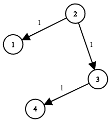

| Category | Difficulty | Likes | Dislikes |
|---|---|---|---|
| Algorithms | Medium | 8237 | 389 |
microsoft | netflix | amazon | google | salesforce | tiktok | akuna-capital
You are given a network of n nodes, labeled from 1 to n. You are also given times, a list of travel times as directed edges times[i] = (ui, vi, wi), where ui is the source node, vi is the target node, and wi is the time it takes for a signal to travel from source to target.
We will send a signal from a given node k. Return the minimum time it takes for all the n nodes to receive the signal. If it is impossible for all the n nodes to receive the signal, return -1.
Example 1:

Input: times = [[2,1,1],[2,3,1],[3,4,1]], n = 4, k = 2
Output: 2Example 2:
Input: times = [[1,2,1]], n = 2, k = 1
Output: 1Example 3:
Input: times = [[1,2,1]], n = 2, k = 2
Output: -1
Constraints:
1 <= k <= n <= 1001 <= times.length <= 6000times[i].length == 31 <= ui, vi <= nui != vi0 <= wi <= 100(ui, vi) are unique. (i.e., no multiple edges.)